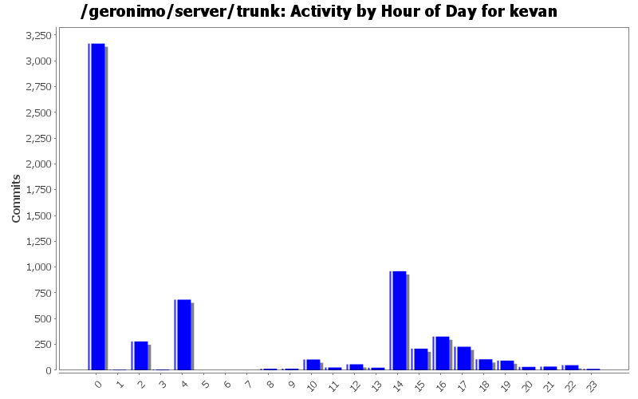
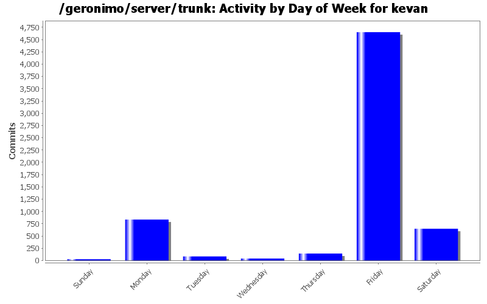
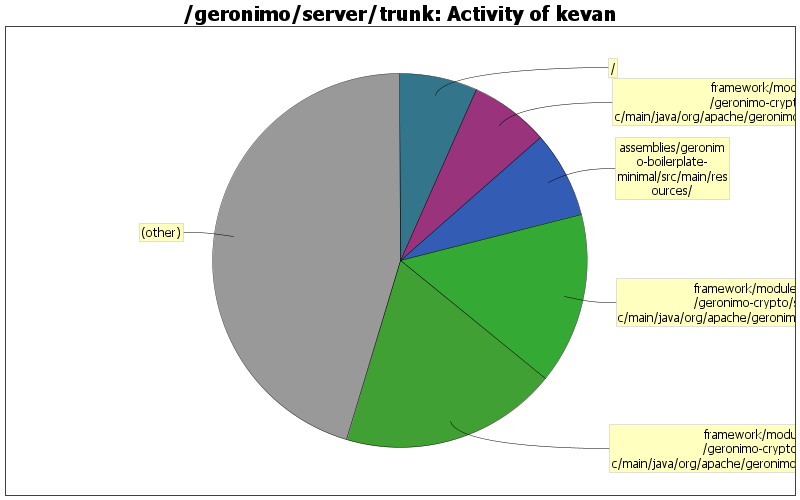

dojo license is needed one more place
191 lines of code changed in 1 file:
add AFL 2.1 license for Dojo files
172 lines of code changed in 1 file:
add AFL 2.1 license for Dojo files
173 lines of code changed in 1 file:
GERONIMO-6055 This change limits the ClassLoader searching (getWiredBundle, etc) that will occur during BeanValidation application startup. ValidatorFactory creation time becomes nearly zero. Bean Validation TCK tests passed for me. Would like some validation of this. Will also need to keep an eye out for any potential side effects. There may be better ways of doing this. So, alternatives welcome.
1 lines of code changed in 1 file:
GERONIMO-6055 pick up equinox cleanupOnSave support
1 lines of code changed in 1 file:
GERONIMO-6055 use the new equinox 3.7.1 build
5 lines of code changed in 3 files:
fix junit test failures introduced by revision 1149223
1 lines of code changed in 1 file:
update osgi dependencies
2 lines of code changed in 1 file:
move to released version of equinox 3.7
14 lines of code changed in 7 files:
GERONIMO-6039 include geronimo-atinject_1.0_spec in the wsdlgen classpath. this allows javax.inject.Inject to be an annotation
1 lines of code changed in 1 file:
nonce change to force a buildbot build
1 lines of code changed in 2 files:
a little bit of cleanup. real purpose to force a buildbot build
0 lines of code changed in 1 file:
GERONIMO-6021 read and write the config.info file using UTF-8 encoding
4 lines of code changed in 2 files:
revert 1136664 -- juddi snapshot is now available in apache snapshot repo
1 lines of code changed in 1 file:
temporary fix for uddi-ws snapshot issues
1 lines of code changed in 1 file:
GERONIMO-6002 add trimSpaces parameter for documentation purposes
4 lines of code changed in 1 file:
GERONIMO-6002 allow gbean xml attributes to be overridden in config.xml
54 lines of code changed in 2 files:
commit dependency changes (don't think they were mine...)
10 lines of code changed in 2 files:
Fix annoying test failure in geronimo-axis-builder. Some platforms/systems would get a java.lang.ExceptionInInitializerError due to commons-logging classloader issues
10 lines of code changed in 2 files:
Avoid RMI classloader error during startup
1 lines of code changed in 1 file:
(145 more)